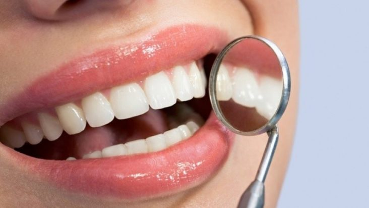
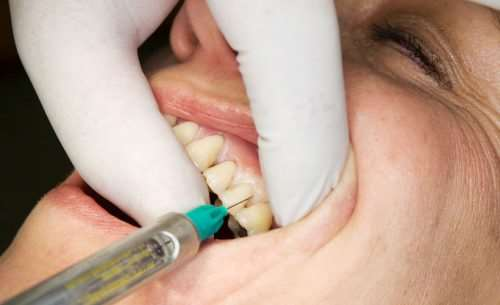
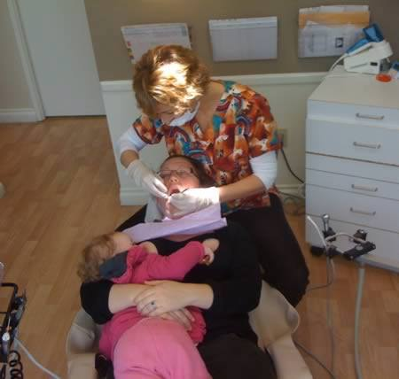
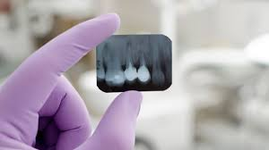

Лікування у стоматолога під час ГВ

Напевне, всім відома фраза, що здоров’я ротової порожнини є запорукою доброго стану всього організму. Проте, у зв’язку з великою кількістю міфів та необґрунтованих заборон, жінки не звертаються по допомогу до стоматолога, боячись, аби не нашкодити дитині, яку годують грудьми. Часто жінки зволікають із лікуванням хворого зуба, боячись болю, а медикаментозного знеболення уникають через міф про шкоду анестезії для дитини під час ГВ.
Ми спробували проаналізувати найпоширеніші медикаменти та способи обстеження в стоматології.
Анестетики
Місцеві анестетики використовуються для знеболення ділянки, яка задіяна в процесі лікування. Сучасні місцеві анестетики представлені препаратами, основою яких є артикаїн (Ультракаїн, Ультракаїн Д, Ультракаїн ДС, Убістезин, Септанест) та мепівакаїн (Мепівастезин, Скандонест). У картриджі з артикаїном міститься допоміжна речовина - адреналін, який сприяє звуженню судин. Його наявність зумовлена тим, що при звуженні судин дія основної речовини стає тривалішою, а також знижується можливість всмоктування препарату в загальний кровообіг.
Мепівакаїн менш ефективний, ніж артикаїн. В його склад не входить адреналін, оскільки він сам має судинозвужувальний ефект. В стоматології він є сумісний з ГВ. На сайті e-lactancia.org він в оранжевій зоні (низький ризик) через ризик затримки прибування перехідного молока пізніше, ніж на 3 добу після пологів у випадку застосування мепівакаїну під час епідуральної анестезії. Умовно, при застосуванні в стоматології, цей препарат є сумісним і не чинить негативного впливу на лактацію.
Іноді в стоматології використовується ще один анестетик - бупівакаїн. Цей препарат має найбільш тривалий анестезуючий ефект. В стоматологічній практиці рекомендується застосовувати бупівакаїн при тривалих втручаннях (понад 3 год), проте він також сумісний з ГВ
Отже, бачимо, що всі сучасні анестетики мають дуже низький ризик і є абсолютно сумісними з ГВ. Перед застосуванням обов’язково обговоріть можливі варіанти зі своїм стоматологом.
Знеболювальні препарати
З метою знеболення до або після стоматологічних втручань лікар може рекомендувати Вам такі препарати:
Ібупрофен - належить до групи нестероїдних протизапальних препаратів. Має знеболювальну, протизапальну та жарознижувальну дію. Має дуже низький ризик, є абсолютно сумісним з ГВ у віковій дозі.
Парацетамол має виражену жарознижувальну дію, знеболювальна і протизапальна дія менше виражені, ніж в ібупрофену. Має дуже низький ризик, є абсолютно сумісним з ГВ у віковій дозі.
Німесил є нестероїдним протизапальним препаратом з вираженою дією. Проте, він має високий ризик і є несумісним з ГВ (не використовується в більшості країн через високу гепатотоксичність). Але через свою велику молекулярну масу та високий ступінь зв’язування з білками плазми крові в грудне молоко практично не потрапляє. Не рекомендується під час ГВ через ризик для здоров’я матері

Антибактеріальні препарати
Аугментин - комплексний антибактеріальний препарат, до складу якого входить амоксицилін та клавуланова кислота. Має дуже низький ризик і є абсолютно сумісним з ГВ.
Доксициклін - антибіотик з групи тетрациклінів. Цей препарат має низький ризик, але рекомендується його замінити на більш безпечні. Проникає в грудне молоко, але в кишківнику дитини зв’язується з кальцієм грудного молока. Довготривале лікування не рекомендується (протягом 3-4 тижнів), оскільки це може спричинити пошкодження хрящів росту, зміни кольору зубів та дисбалансу кишкової флори.
Лінкоміцин - антибіотик, який використовують для лікування інфекцій кісткової тканини. Найчастіше застосовується в стоматології. Має дуже низький ризик і є абсолютно сумісним з ГВ.
Місцеві антисептики
Хлоргексидин - сумісний з ГВ.
Перекис водню - сумісний з ГВ.
Препарати йоду - йод, йодоформ, калію йодид, повідон-йод, мають високий ризик і не сумісні з ГВ. При застосуванні таких препаратів з’являється високий ризик виникнення проблем з діяльністю щитоподібної залози дітей. Такі антисептики рекомендується замінювати на більш безпечні.

Часто виникає питання - чи потрібно зціджувати молоко після лікування у стоматолога?
Всі препарати, які мають дуже низький ризик під час лактації (зелена зона на сайті e-lactancia.org) не проникають з крові в молоко, тому зціджувати молоко після застосування таких медикаментів нема сенсу. Можна прикладати дитину до грудей не залежно від прийому таких препаратів. А препарати з вищим ризиком (оранжева зона і вище), які проникають з крові в молоко, будуть наявні в молоці весь час, поки будуть і в крові, тому зціджування з метою зниження дози препарату в молоці будуть неефективними. У випадку, якщо такі препарати мають альтернативу, то їх варто замінити на безпечніші. Якщо ж альтернативи нема, то варто обмежити годування протягом 5 періодів піввиведення конкретного препарату (інформація про такий час (Т1/2) є в інструкції до застосування конкретного медичного препарату або на сайті e-lactancia.org

Іноді, при лікуванні в стоматолога, виникає потреба в проведенні рентгенологічного обстеження. Рентгенологічне випромінювання за своєю природою є іонізуючим. В стоматології, як і в більшості медичних обстежень, де використовується рентгенівське випромінювання, застосовують промені з низькою енергією і опромінюють тіло людини упродовж дуже малих проміжків часу, тому навіть при багатократному повторенні вонивважаються фактично нешкідливими для людини.
У випадку рентгенівського випромінювання, носієм випромінювання є електромагнітні хвилі, які зникають одразу після вимкнення рентгенівського апарату і не здатні накопичуватися в організмі людини. У зв’язку з тим, що дія рентгенівського випромінювання на організм людини закінчується після завершення обстеження, а самі по собі промені не накопичуються і не призводять до утворення радіоактивних речовин, ніяких процедур для виведення радіації з організму після обстеження проводити не треба. Після завершення процедури склад крові, а відповідно і молока, ніяк не змінюється, тому нема жодної потреби в зціджуванні чи обмеження годування певний час. Одразу після завершення обстеження дитина може прикладатися до грудей без ризику для її здоров’я.
Перед застосуванням медичних препаратів та процедур обов’язково порадьтеся з лікарем!
Ще один міф щодо здоров'я зубів стосується тривалого періоду лактації. Поширена думка, що тривале ГВ робить зуби мами крихкими і вони починають дуже псуватися через те, що кальцій з кісток мами переходить у великій кількості в молоко. Справді, грудне молоко впродовж перших місяців після народження є єдиним джерелом кальцію для дитини. Таким стабільним вміст кальцію в молоці є завдяки його стабільному надходженню з кісткової тканини матері. Тобто, відбувається фізіологічна демінералізація кісток. Приблизно за перших 6 місяців лактації мінеральна щільність кісткової тканини зменшується від 3 до 10%. А після півроку починається швидка ремінералізація (відновлення вмісту кальцію в кістковій тканині) і до 12 місяців, незалежно від того, чи продовжує жінка годувати грудьми, чи припиняє лактацію, ремінералізація завершується. Така тимчасова втрата кальцію є корисною, оскільки кісткова система жінки оновлюється.
Засвоєння кальцію з їжі під час лактації є не більшою, ніж звичайно. Збагачення дієти кальцієм не запобігає демінералізації, а лише зумовлює посилене виведення надлишку кальцію з організму. З іншого боку, якщо вміст кальцію в дієті менший рекомендованого (1000мг/добу), то це ні не зменшує його вмісту в молоці, ні не посилює демінералізацію кісткової тканини.
Треба пам’ятати, що карієс зубів - це інфекційне захворювання, яке спричиняє збудник Streptococcus mutans. Цей мікроб добре виживає в роті за умови утворення малої кількості слини, збільшення кислотності середовища та наявності цукру. Він передається від однієї особи до іншої через поцілунки, недостатньо очищений посуд, через слину.
Найімовірнішою причиною порушення стану зубів є відсутність своєчасної гігієни та лікування зубів, наявність каріозних дефектів, які можуть швидше ушкоджувати дещо розм’якшену кісткову тканину зуба. Проте, ретельна гігієна та своєчасне відвідування стоматолога може допомогти зберегти зуби здоровими та красивими надовго.
Годуйте своїх малят в радість та для Вашого здоров’я та здоров’я малюків. І нехай Ваші зуби будуть завжди здоровими та доглянутими!
статтю редагувала Ліля Криницька